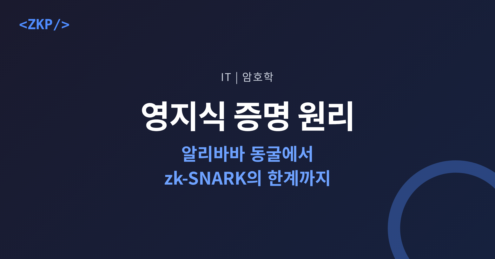
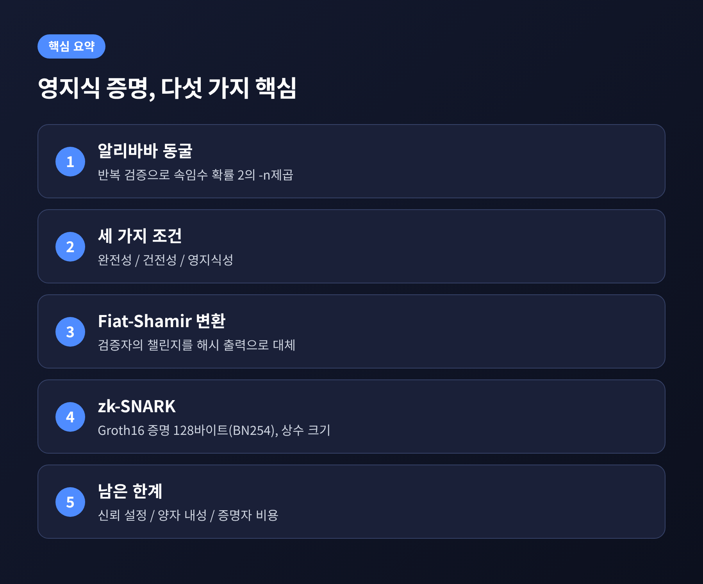
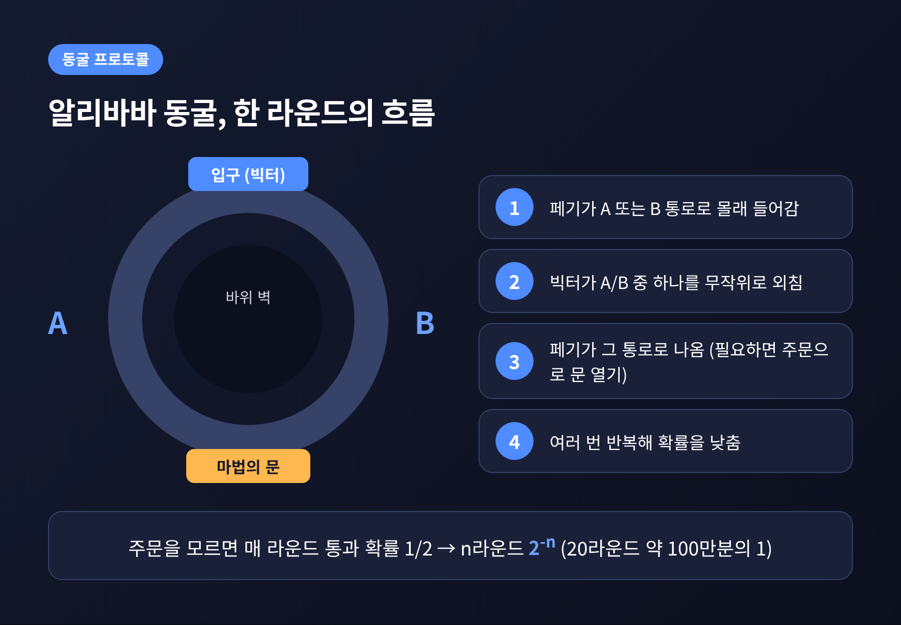
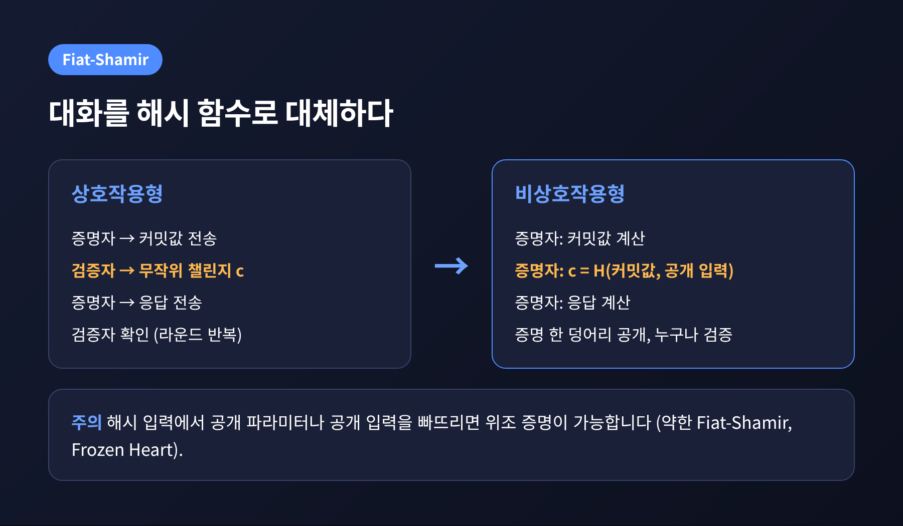
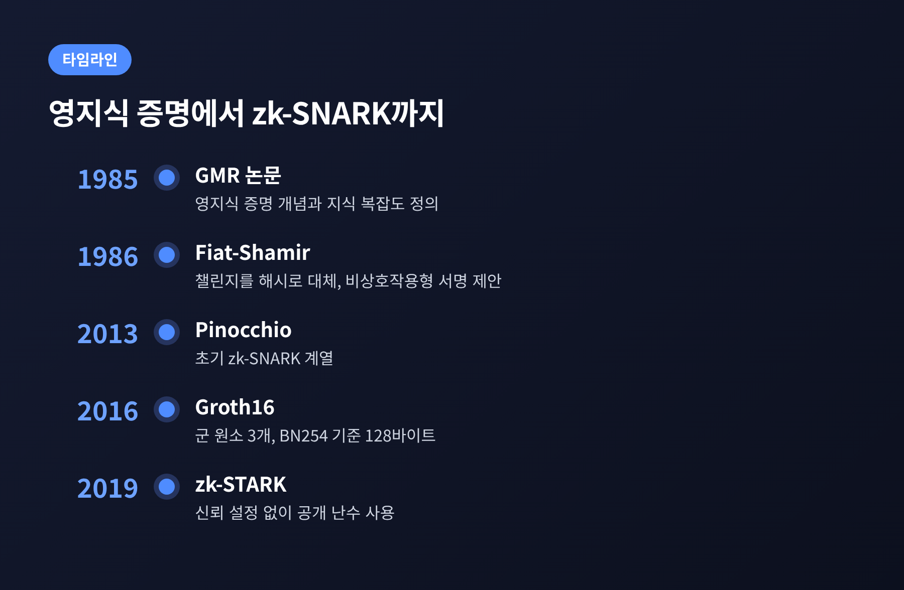
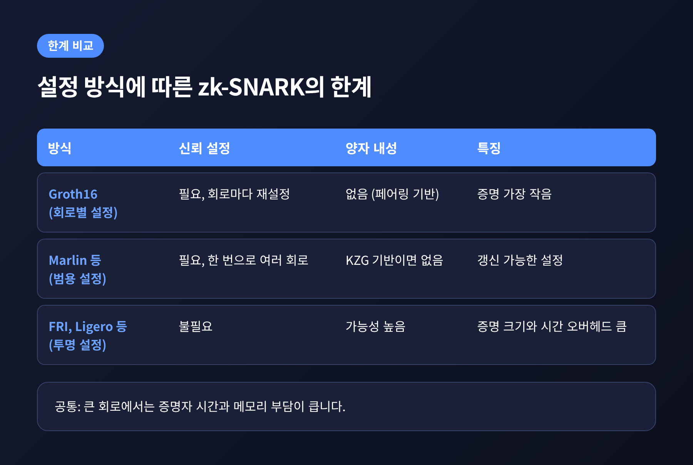

이번 글에서는 영지식 증명의 원리를 정리해 보겠습니다.
알리바바 동굴 비유로 핵심 개념을 잡고, 세 가지 조건과 Fiat-Shamir 변환, zk-SNARK, 그리고 그 한계까지 차례로 다룹니다.
먼저 결론부터 말씀드립니다. 영지식 증명은 비밀을 보여주지 않고 비밀을 안다는 사실만 설득하는 기술이고, 반복 검증으로 속임수 확률을 무시할 만큼 낮춥니다. 해시 함수로 상호작용을 없앤 것이 비상호작용형이며, 그 정점이 zk-SNARK입니다. 다만 신뢰 설정과 양자 컴퓨터 문제가 남아 있습니다.

영지식 증명이라는 개념은 1985년 Goldwasser, Micali, Rackoff가 만들었습니다.
논문 제목은 "The Knowledge Complexity of Interactive Proof-Systems"이고, 1989년 SIAM Journal on Computing에 실렸습니다.
이 논문은 증명을 증명자와 검증자 두 당사자가 주고받는 프로토콜로 모델링했습니다. 그리고 증명 과정에서 정보가 얼마나 새어 나가는지를 재는 '지식 복잡도'를 정의했습니다.
이후 흐름도 짚어 둘 만합니다. 1988년 Blum, Feldman, Micali는 공통 랜덤 문자열이 있으면 상호작용 없는 영지식이 가능함을 보였습니다. 1991년 Goldreich, Micali, Wigderson는 깨지지 않는 암호화를 가정하면 모든 NP 문제에 영지식 프로토콜이 있다는 사실을 3-색칠 문제로 보였습니다.
가장 유명한 비유는 Quisquater, Guillou, Berson이 쓴 "아이들에게 영지식 프로토콜을 설명하는 법"에 나옵니다. 이야기는 시장에서 지갑을 도둑맞은 알리바바가 두 갈래 동굴로 도망친 도둑을 쫓는 장면에서 시작합니다.
설정은 이렇게 단순화할 수 있습니다. 동굴은 고리 모양이고, 입구 맞은편에 마법의 문이 있습니다. 증명자 페기는 문을 여는 주문을 알고 있습니다. 검증자 빅터는 주문은 모른 채, 페기가 안다는 사실만 확인하고 싶습니다.
절차는 네 단계입니다.

주문을 모르는 사람은 매 라운드 절반의 확률로만 통과합니다. 처음 들어간 통로와 빅터가 부른 통로가 우연히 같아야 하기 때문입니다. n번 반복하면 속일 확률은 2의 -n제곱이 됩니다. 20라운드면 약 100만분의 1입니다. 다른 설명 자료는 40라운드를 예로 드는데, 이 경우 (1/2)^40, 약 1조분의 1에 해당합니다.
여기서 중요한 점이 하나 있습니다. 이 과정을 녹화한 영상은 제3자에게 증거가 되지 않습니다. 영상에는 빅터의 호출과 페기의 퇴장만 담기고, 두 사람이 미리 짜면 얼마든지 똑같이 만들 수 있기 때문입니다. 가짜 영상을 만들 수 있다면 진짜 영상도 비밀에 대해 알려주는 것이 없다는 논리입니다. 비밀이 새지 않는다는 말의 직관적인 뜻입니다.
어떤 프로토콜이 영지식 증명이라고 불리려면 세 조건을 만족해야 합니다.
영지식성의 형식적 정의는 '시뮬레이터'를 씁니다. 비밀이 없는 시뮬레이터가 실제 상호작용과 구별되지 않는 대화록을 만들 수 있다면, 검증자는 실제 상호작용에서도 아무것도 얻지 못했다는 뜻입니다. 시뮬레이터는 검증자를 '되감기'할 수 있는데, 현실에서는 불가능한 동작입니다. Matthew Green은 이 영지식성의 정의가 가장 까다로운 부분이었다고 적었습니다.
한 가지 짚어야 합니다. 건전성은 확률적 보장입니다. 엄밀한 수학적 증명과는 결이 다르고, 반복으로 오류를 무시할 수준까지 낮추는 방식입니다. 또한 Schnorr 식별 방식의 영지식성은 '정직한 검증자'에 대해서만 증명되며, 챌린지를 악의적으로 고르는 검증자에게는 그 논증이 깨진다고 알려져 있습니다.
동굴 프로토콜에는 약점이 있습니다. 증명자와 검증자가 여러 번 주고받아야 하고, 그 자리에 검증자가 있어야 합니다. 블록체인처럼 누구나 나중에 검증하는 환경에는 맞지 않습니다.
해법은 1986년 Amos Fiat와 Adi Shamir가 내놓았습니다. 논문 "How to prove yourself"에서 검증자가 던지던 무작위 챌린지를 해시 함수의 출력으로 대체했습니다. 증명자가 직접 c = H(커밋값 || 메시지)를 계산하면, 검증자와 대화하지 않고도 증명 한 덩어리를 만들 수 있습니다. 메시지를 함께 해시에 넣으면 Schnorr 서명이 되고, 이는 EdDSA의 토대입니다.

예전에는 검증자가 매 라운드 직접 질문했습니다. 지금은 해시 함수가 그 역할을 맡습니다.
다만 이 안전성은 해시가 이상적인 랜덤 오라클처럼 동작한다는 가정 위에 있습니다. 구현에서 자주 문제가 됩니다. 해시 입력에서 공개 파라미터나 공개 입력을 빠뜨리는 '약한 Fiat-Shamir'가 대표적입니다. 이 경우 공격자는 챌린지를 먼저 정해 두고 비밀 없이 검증식을 맞춰 위조 증명을 통과시킬 수 있습니다. Trail of Bits가 이를 'Frozen Heart'라 부르며 Bulletproofs와 Plonk 구현의 결함을 지적했습니다. 후속 논문은 조사한 오픈소스 구현 가운데 36개가 약한 Fiat-Shamir를 쓰고 있다고 보고했습니다.
이론 쪽 경고도 있습니다. Khovratovich, Rothblum, Soukhanov의 논문 "How to Prove False Statements"는 해시로 챌린지가 정해진다는 점을 이용해 거짓 명제의 증명을 통과시키는 공격을 보였습니다. Green은 2025년 2월 해설에서 예시가 인위적이라는 점을 인정했습니다. 실제 시스템에 얼마나 영향을 주는지는 이 자료만으로 단정하기 어렵습니다.
zk-SNARK는 Succinct Non-Interactive ARgument of Knowledge의 약자입니다. 상호작용이 없고(Non-Interactive), 증명이 짧으며(Succinct), 검증이 빠르다는 특징을 가집니다. 논문들은 증명 크기와 검증 시간이 회로 크기의 다항로그 수준이어야 한다고 정의합니다.
계보를 보면 2013년 Pinocchio에서 시작해 2016년 Jens Groth의 Groth16으로 이어집니다. Groth16은 증명이 군 원소 세 개(A, B, C)로 이루어진 상수 크기이며, BN254 곡선 기준으로 128바이트입니다. 검증은 페어링 방정식 하나를 확인하는 방식입니다. 이 128바이트라는 수치는 한 자료에서 확인한 값이라는 점을 밝혀 둡니다.

장점만큼 한계도 분명합니다.
첫째는 신뢰 설정(trusted setup)입니다. 페어링 기반 방식은 설정 단계에서 난수를 만들어 암호화하고 원본을 폐기해야 합니다. 남은 원본이 'toxic waste'이고, 이를 아는 사람은 검증자가 받아들이는 위조 증명을 만들 수 있습니다. 그래서 여러 참여자가 의식(ceremony)을 열어 함께 설정을 만듭니다. 한 명만 정직해도 안전하다는 1-of-N 구조입니다.
Zcash 사례가 유명합니다. toxic waste가 발견되면 '허공에서 Zcash를 만들어낼' 수 있다는 설명이 있습니다. Andrew Miller와 Ryan Pierce는 약 3,000피트 상공에서 가이거 계수기와 에어갭 노트북, 체르노빌의 방사성 물질로 난수를 만들었습니다.
둘째는 회로별 설정입니다. Groth16은 회로마다 설정을 새로 해야 하고, 버그가 발견되면 다시 해야 합니다. Marlin 같은 범용·갱신 가능 설정은 한 번으로 여러 회로를 감당합니다. FRI, Aurora, Ligero 같은 해시·코드 기반 방식은 아예 설정이 필요 없습니다. 2019년 도입된 zk-STARK도 신뢰 설정이 없습니다.
셋째는 양자 컴퓨터입니다. 페어링, KZG, 이산로그에 기반한 방식은 양자 내성이 없습니다. 해시·코드 기반은 양자 내성 가능성이 높지만, 증명 크기와 증명 시간의 상수 오버헤드가 큽니다.

넷째는 증명자 비용과 실무 문제입니다. 큰 회로에서는 증명 시간과 메모리 부담이 큽니다. 제약 시스템과 컴파일러가 병목이고, 보고된 취약점 대부분이 컴파일러 언어를 오해한 데서 나왔다고 합니다. 라이브러리 간 호환성도 부족합니다. 이론적으로 가장 빠른 방식이 벤치마크에서 늘 최고인 것도 아닙니다.
정리하면 이렇습니다.
ZKP는 "보여주지 않고 믿게 만드는 기술"입니다. 동굴의 반복 검증이 확률로 믿음을 쌓고, 해시 함수가 대화를 없애고, zk-SNARK가 그 증명을 128바이트 안팎으로 줄였습니다. 대신 그 값은 신뢰 설정과 구현 오류, 양자 컴퓨터라는 가정 위에 놓여 있습니다.
기술이 완벽해서 믿는 것이 아니라 어디까지 믿어도 되는지를 알고 쓰는 것이 중요하다고 생각합니다. 다음에 이 기술이 쓰인 서비스를 만나시면, 그 증명이 어떤 설정 위에 서 있는지 한 번쯤 물어보시길 권합니다.